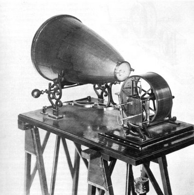

Origen de el genero electronico

Los primeros matices de música electrónica se remontan a los años sesenta. Aunque se puede considerar que el primer ápice de electrónica se remonta a inicios del siglo XX con el fonoautógrafo, se considera un elemento principal que marcó la tendencia que iba a comenzar el sintetizador Moog. Durante estos años la experimentación fue clave.

En la década de los setenta los sonidos electrónicos van tomando protagonismo, dejando atrás la experimentación anterior. La aparición de Kraftwerk y Jean-Michel Jarre fueron clave para hacer crecer la popularidad de la música electrónica. Cada vez la tendencia crecía más y otros rostros más populares hasta nuestros días como David Bowie o el grupo Pink Floyd fueron claves en la introducción de este género musical.


David Bowie..........................................................grupo Pink Floyd